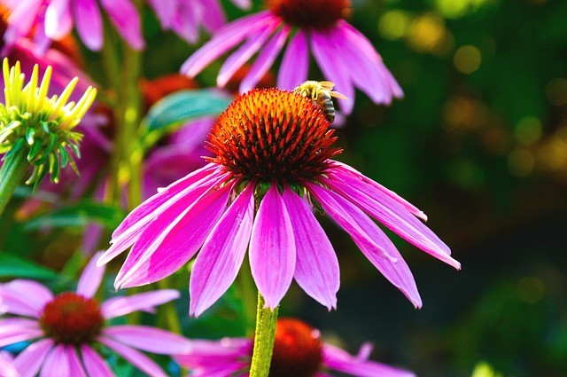
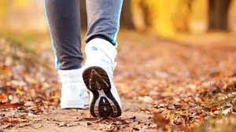
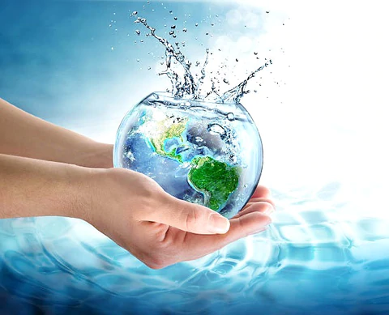
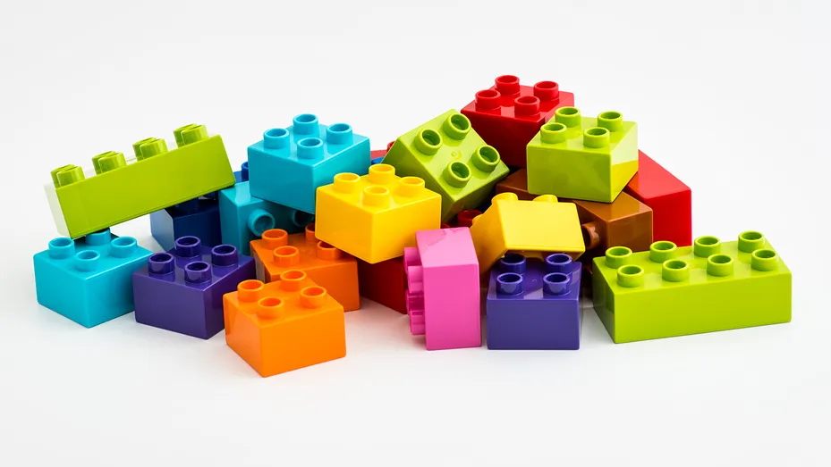

1.HELP THE BEES!
Bees pollinate nearly 90% of plant species and they contribute to more than 35% of the world’s food supply, but they’re under threat from varroa mites. Plant scientists are developing cutting edge crop protection products to help farmers control the mites and protect precious bee populations. Give pollinators an extra boost in your backyard by planting a variety of wildflowers and native plants to provide nectar that will bloom throughout the season. You can also build bee boxes for native bees to make their home

2.PLANT LOCAL FLOWERS, FRUIT AND VEGETABLES
Research the plants and vegetables that are local to your area and grow a variety. Each plant and vegetable helps to protect biodiversity and supports the wider ecosystem of your local area.
.jpg)
3.PROTECT NATURAL HABITATS
Human impact on the earth can have a devastating impact on biodiversity. Small steps like keeping to walking paths, and not stepping through flowers or crops, can help protect what is growing there.

4.TAKE A WALK
Climate change can have devastating consequences for biodiversity. Reducing your carbon footprint by taking the bus or walking can help protect it. Plant scientists are also working to combat climate change every day. One example is through innovative developments in conservation tillage, which uses less fuel and therefore reduces the emission of greenhouse gases.

5.CONSERVE YOUR WATER USE
Fresh bodies of water are essential to biodiversity. Reducing the amount of water you use, by having a 5-minute shower or not running the water when washing up the dishes, can help protect vital wetlands. Plant scientists are also working to help conserve by developing crop varieties that use less water.
.webp)
6.REDUCE, REUSE AND RECYCLE
Recycling lessens pollution by decreasing energy, electricity, and water consumption and the need for landfills. Not only can you recycle bottles and cans, but your local recycling center will usually allow you to recycle clothes, electrical goods and batteries. Programs around the world have collected and recycled almost 800,000 metric tons of empty pesticide containers and agricultural plastics in the last thirteen years. That is more than the weight of 100 Eiffel Towers.
Some Protect Our Biodiversity Videos Available In Youtube
news about enviroment
-
LEGO to find replacement material for bricks by 2030
In an effort to be more environmentally responsible, LEGO have said they aim to stop manufacturing bricks made of plastic resin and are considering other options, which could include hemp. According to Telegraph World, the company makes 60 billion blocks a year. While LEGO want to replace the harmful plastic used in their products, they also require the new material to meet the high standards that allow the blocks to work as they always have, especially with the effective “clicking” together is a key aspect of the iconic coloured block.
-
2021 Impact: 23 Million Trees Planted Around the Globe.

2021 was a year of ups and downs. But despite the challenges presented by the ongoing Covid-19 pandemic, we managed to plant 23,588,232 trees in 42 countries around the world. We're so proud to continue our journey of incredible growth year over year by planting over 2x the trees we did in 2020. But it's the individual stories, the poignant details that, when the days are long and the obstacles many, warm our hearts and strengthen our resolve to continue our work restoring, one tree at a time, our global forest.